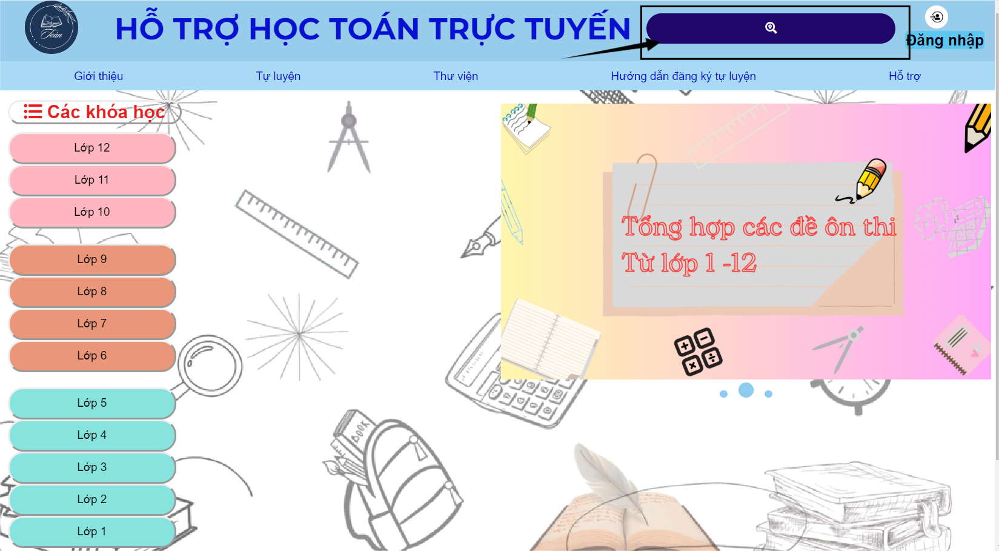
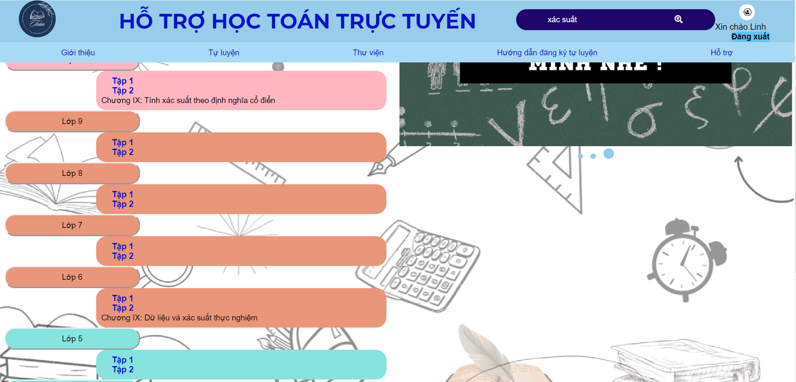

Xác định chủ đề: Đầu tiên, hãy xác định chủ đề hoặc lĩnh vực bạn muốn tìm hiểu. Điều này sẽ giúp bạn thu hẹp phạm vi tìm kiếm và tập trung vào những nội dung liên quan.
Sử dụng công cụ tìm kiếm: Hãy dùng công cụ tìm kiếm ở góc trên cùng bên phải của trang chủ và nhập từ khóa liên quan đến chủ đề bạn cần tìm rồi ấn phím Enter.

Sau khi tìm kiếm thành công, hãy chọn Bài giảng mà bạn muốn học.

Nếu bạn gặp bất kỳ vấn đề nào trong quá trình thực hiện, đừng ngại liên hệ với chúng tôi để được hỗ trợ thêm. Chúng tôi rất vui lòng được giúp đỡ bạn.